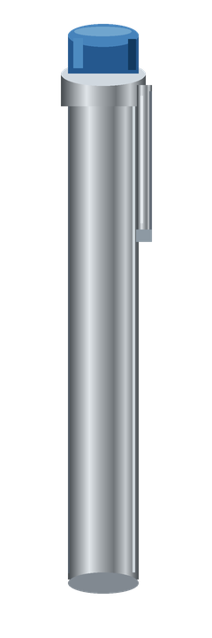
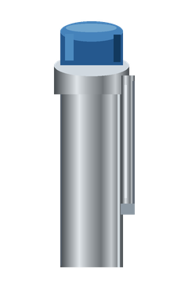
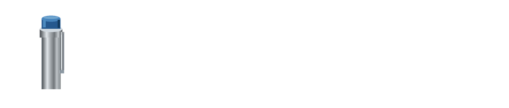
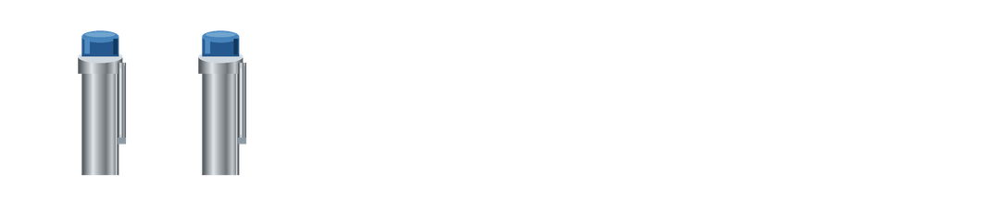
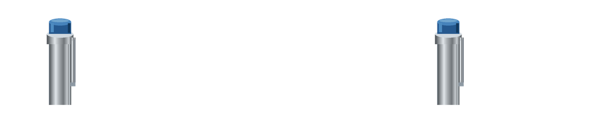
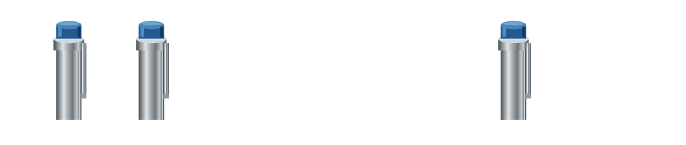
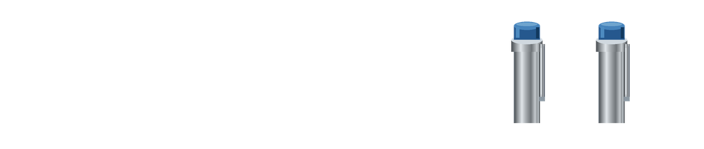
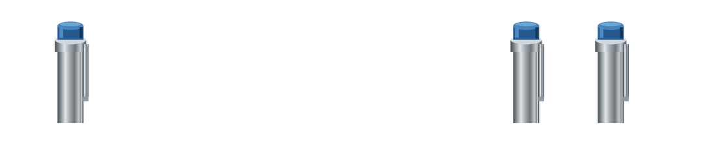
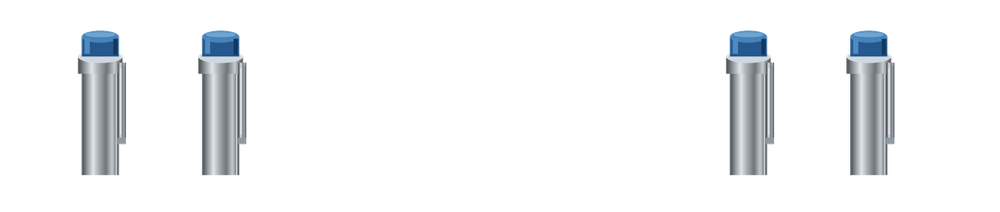

Unassigned full blue-cap silver clipped code cylinder candidate

Separate blue-cap silver device studies and all nine count layouts. No rank, grade, class, uniform or entitlement assignments.
Front view: wearer left is viewer right. Empty 0/0 is an explicit no-cylinder option; unresolved mappings remain null. The center is reserved for a future plaque composition and contains no plaque.
Full device and exposed-pocket views are separate; the latter is clipped at a proposed occlusion line, without invented pocket/fabric. PNGs have real transparency; checkerboard is CSS only.
Manifest and exact hashes · Existing rank catalog








